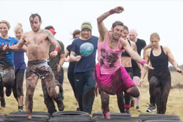

Local News
Winter Storms 2014
Sennen Cove has been battered by the stormy atlantic all winter. 35ft waves have been breaking into the cliffs. Thankfully there has been no local loss of life.

The swell coming in from the Atlantic hits the cliffs and flies over into Sennen Cove, above the lifeboathouse.
Storm watchers were seen getting soaked as the waves hit the sea wall and car park in the village.
News archive
Popular Stories
There have been a few sightings of spear gun fishingaround Sennens shores. We ask for your views
The Sennen Beach dog ban between Easter and September has been inplace for nearly 2 years. Is everyone sticking to the rules?
In the run up to the 2012 Olympics, the Olympic torch passed through Sennen
News from the web
Storm footage on YouTube
Friday, 14th February, 2014
Amatuer footage shows the enormous waves hitting Sennen, catapulting 80ft into the air. The swell coming in from the Atlantic hits the cliffs and flies over the lifeboathouse.
Source: Mail Online(via YouTube)

Are you tough enough?
Tuesday, 4th March, 2014
Some of Penwith’s most adventurous souls are gearing up for the UK’s ultimate obstacle endurance event.Tuff Enuff features 30 gruelling obstacles over a 12km course designed by Royal Marines.
Source: This is Cornwall
Lisa Lucas Art Exhibition
Thursday, 6th March, 2014
Lisa Lucas, a local artist, will be exhibiting her work at The Morvah Schoolhouse Galleryas their featured artist for March. The newly refurbished café space will host the "Hope Springs Eternal" exhibition.
Source: This is Cornwall